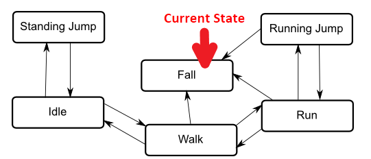

How to create State Machines (using the Unity Animator System)
In general

Example state machine
- A state machine is used to represent the states a particular object or system may be in, with one being the current state at any given time.
Examples: a simple enemy AI, menu page transitions or states of the game.
- Taken together, the set of states, the set of transitions between them and the variable to remember the current state form the state machine.
- In Unity, you can create an asset called an Animator Controller. This is a state machine template normally used for transition between different object or character animations.
- The state machine states are usually associated to animations, but this is actually optional if you want to create a pure-logic state machine.
- To run your state machine, add a component called Animator to a GameObject and set it up with any Animator Controller that you’ve created. This is now an instance of your state machine.
- To run logic on each state, you need to create a script derived from the class StateMachineBehaviour. This script can be added to a state in the state machine (Animator) view.
StateMachineBehaviour
- Use
OnStateEnter() and OnStateExit() methods to e.g. start and stop listening to game events when the state is active.
- To clean up the current state properly, you’ll need to make sure to handle
OnDisable() as well, as the above callbacks are not called if the object or Animator component is disabled.
- You can create a library of StateMachineBehaviour subclasses to reuse in your state machines.
Settings it up
- Create a new "Animator Controller" from the right-click menu. A double-click on it will bring you to the Animator Editor view, showing the first state boxes: Start and Exit.
- Create the state boxes you need and draw the desired connections using right-click->make transition.
- For each transition, set transition duration to zero and deactivate the exit time. If transition duration is non-zero, the next state’s OnEnter will be called before the current state’s OnExit and both are active at the same time! (This is the intended function of the transition between to animation states: a blend- over between the two.)
- Add transition Triggers in the parameter sidebar and assign them as conditions to the transitions you created. A logical 'Or' is done by adding more than one transition between the same source and target. A logical 'And' is done by having multiple conditions on a single transition.
- Add your Controller to an Animator component of a suitable object of your choice. Example: A GameState state machine would go to the 'GameManager' persistent object.
- Get the Animator component, which represents the State Machine from your script. You may want to wrap this in your own StateMachine type class.
- Call
SetTrigger("Trigger name") from code on that controller object to enable the transitions.
- Add subclasses of StateMachineBehaviours to individual states of the machine. As explained above, these possess Callbacks, which are called from Unity when the relevant state is entered or exited. This mechanism works very much like the 'normal' MonoBehaviours you are probably used to.
Notes
- Do not trigger transitions more than once, because they are only consumed once per frame!
- Transitions using triggers will advance to the next state in the same frame. Transitions based on other parameter types take an extra frame.
Links
Maybe have a look at some alternatives:

 1.8.13
1.8.13